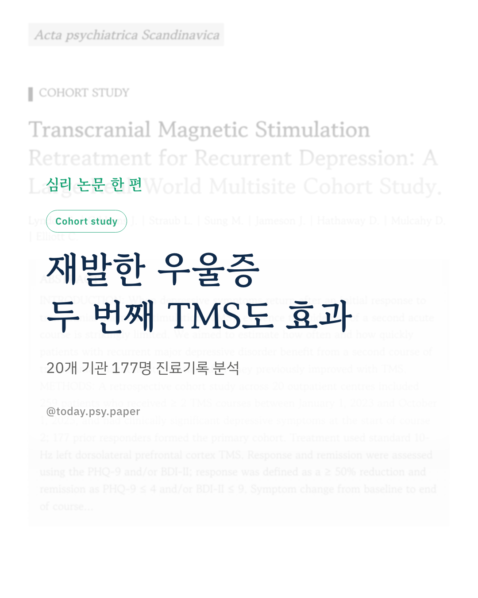
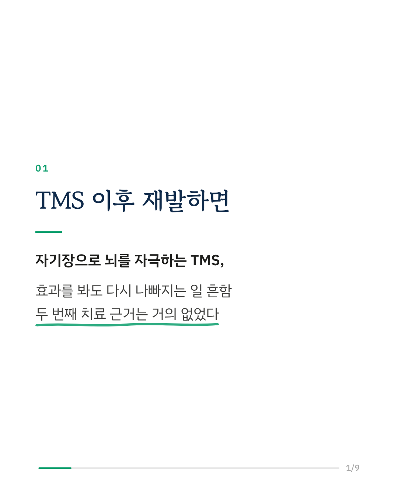
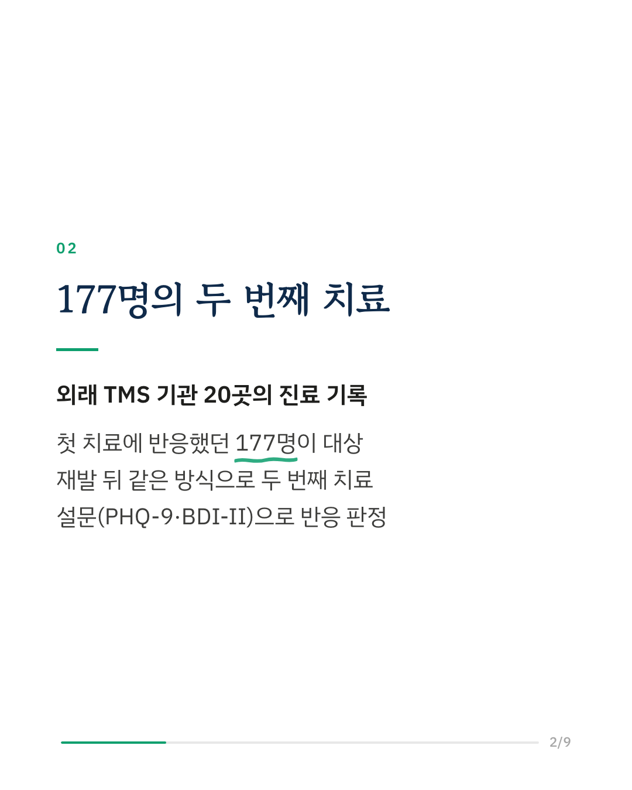
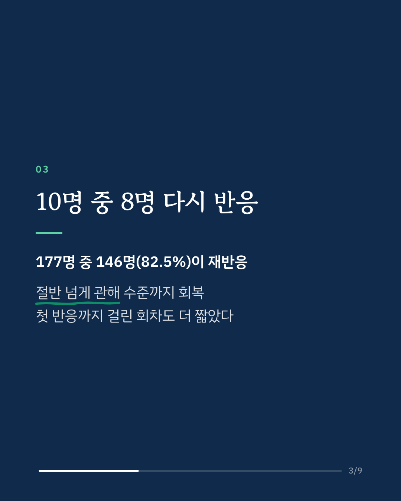
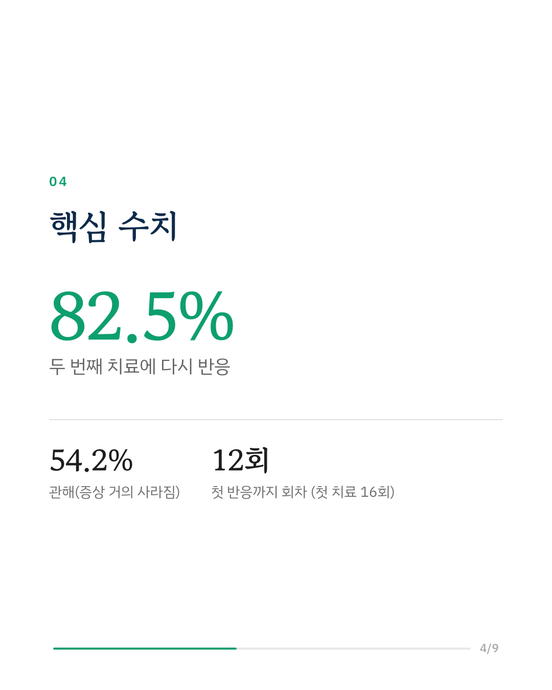
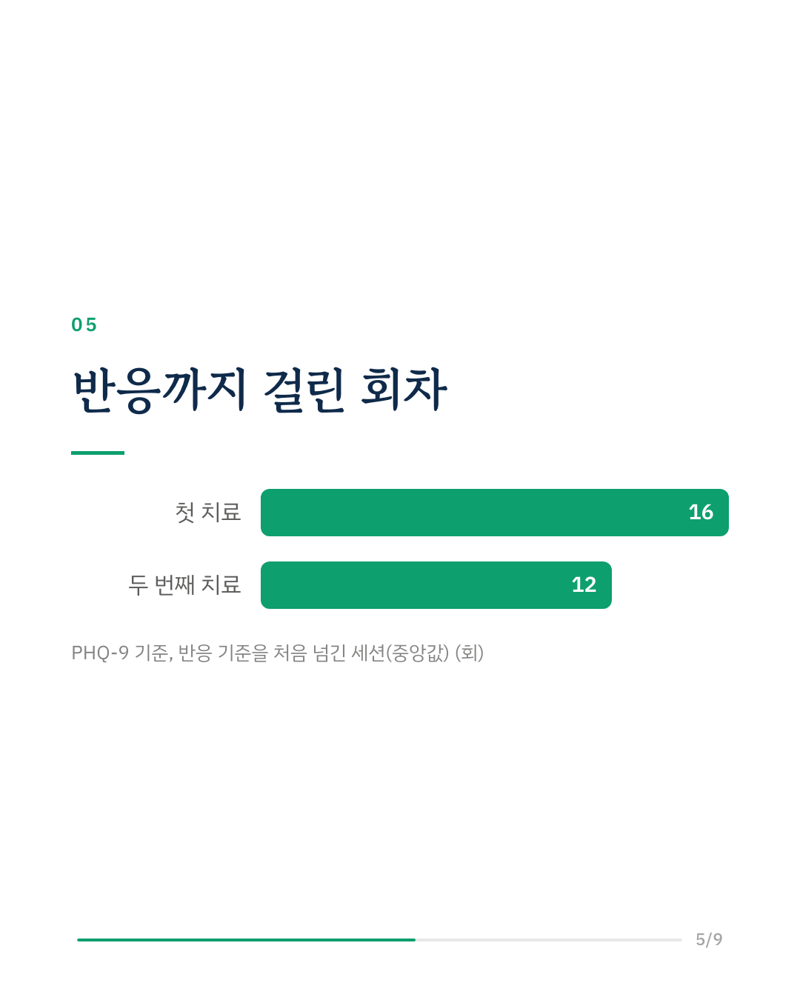
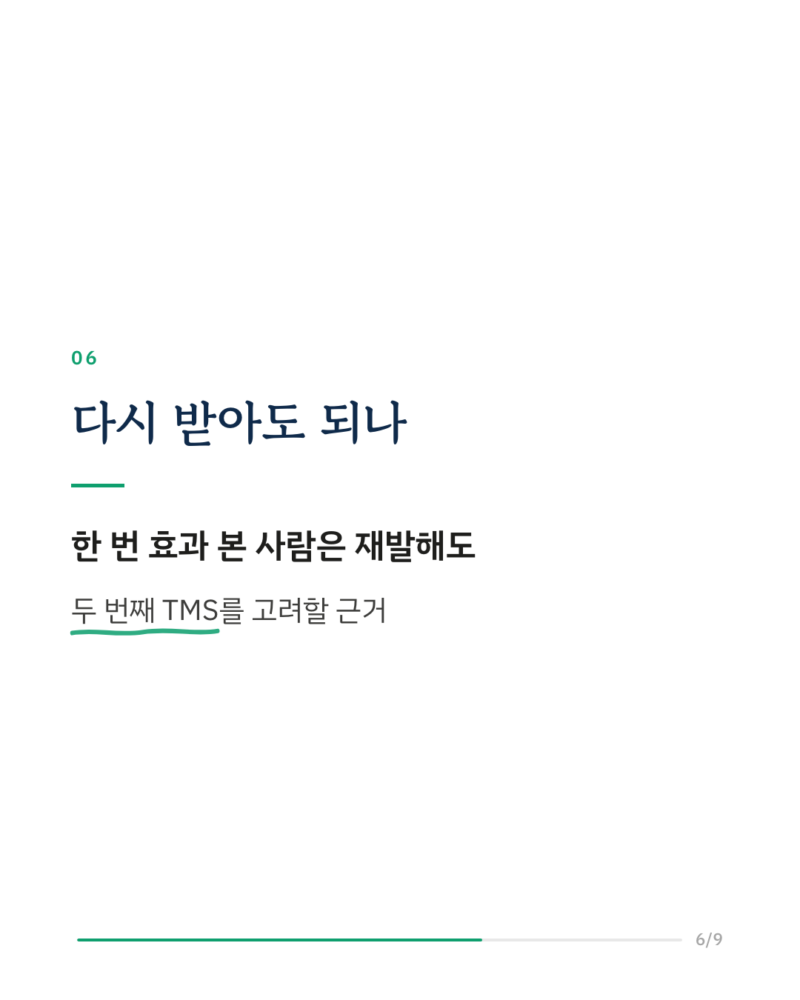
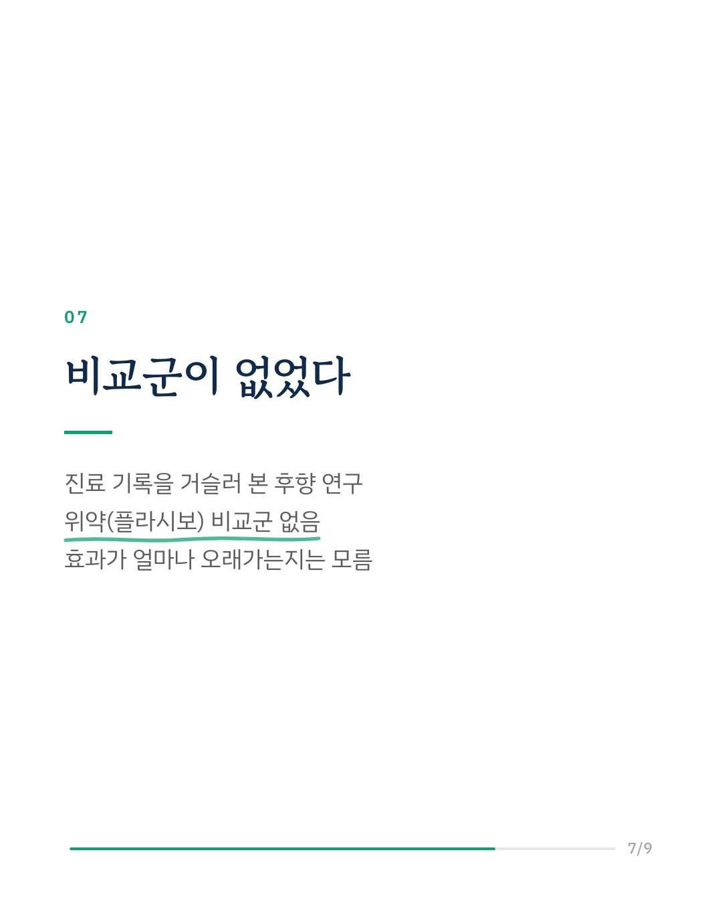
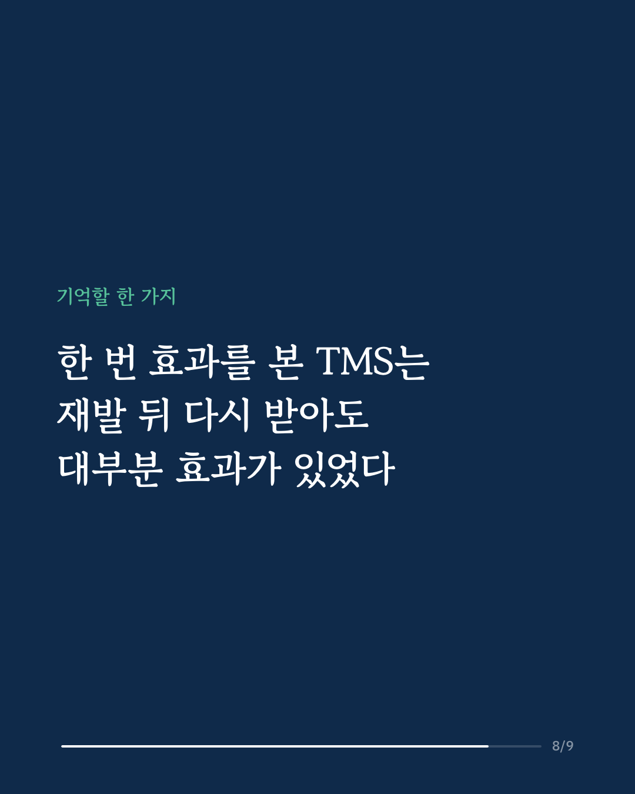
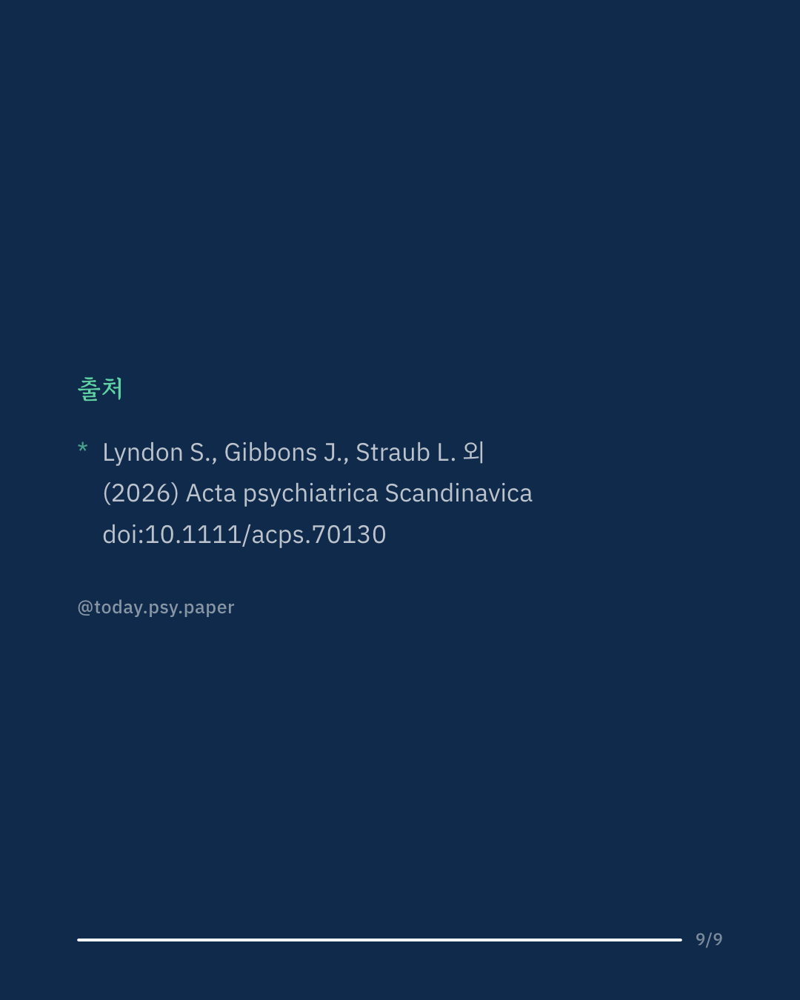

우울증 치료법 중 하나인 경두개 자기자극(TMS)은 자기장으로 뇌의 특정 부위를 자극하는 방법입니다. 한 번 효과를 봤더라도 시간이 지나 증상이 돌아오는 경우가 있는데, 그때 두 번째 TMS를 받아도 되는지에 대한 연구는 거의 없었습니다. 이 연구는 외래 TMS 기관 20곳의 2023~2025년 진료 기록에서, 첫 치료에 반응했다가 재발해 다시 치료받은 환자 177명을 살펴봤습니다. 177명 중 146명(82.5%)이 두 번째 치료에서도 반응 기준(증상 점수 절반 이상 감소)을 넘겼고, 96명(54.2%)은 증상이 거의 사라진 관해 수준에 이르렀습니다. 반응이 나타나기까지 걸린 회차도 첫 치료보다 짧았습니다. PHQ-9 기준으로 첫 치료는 16회째, 두 번째 치료는 12회째에 반응 기준을 처음 넘겼습니다. 연구진은 한 번 TMS로 좋아졌던 사람이 재발했을 때, 두 번째 TMS를 고려할 수 있다고 말합니다. 다만 진료 기록을 거슬러 본 후향 연구여서 위약(플라시보) 비교군이 없고, 두 번째 치료의 효과가 얼마나 오래 유지되는지는 다루지 않았습니다. 출처: Acta Psychiatrica Scandinavica (2026), 'Transcranial Magnetic Stimulation Retreatment for Recurrent Depression: A Large Real-World Multisite Cohort Study' DOI: 10.1111/acps.70130 #임상심리 #정신건강정보 #심리학연구 #논문리뷰 #우울증치료 #우울증재발 #경두개자기자극 #정신의학
python3 publish.py 42532518